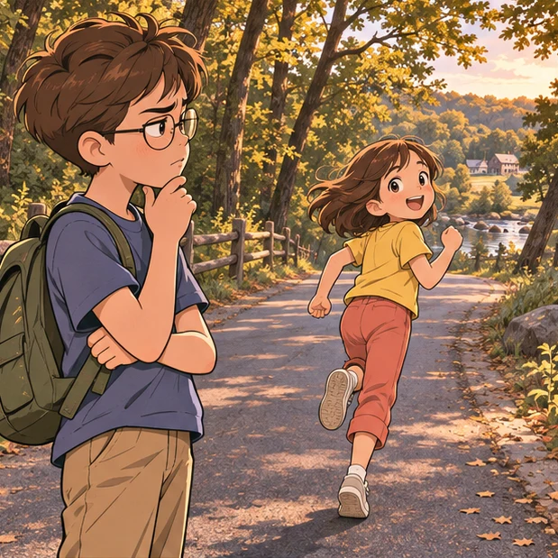
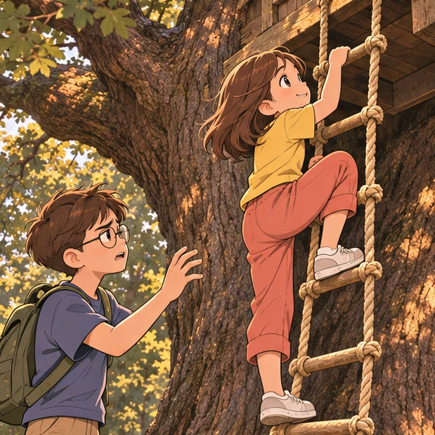
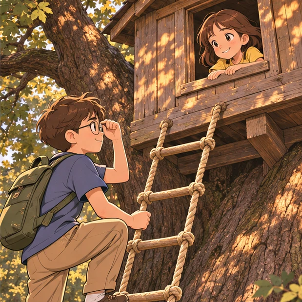

Dinosaurs Before Dark
10 chapters · 잭과 애니의 공룡 시대 모험
Into The Woods
"Help! A monster!" said Annie.
"Yeah, sure," said Jack. "A real monster in Frog Creek, Pennsylvania."
"Run, Jack!" said Annie. She ran up the road.

Oh, brother, thought Jack. This is what he got for spending time with his seven-year-old sister.
Annie loved pretend stuff. But Jack was eight and a half. He liked real things.
"Watch out, Jack! The monster's coming!" said Annie.
Jack didn't say anything.
"Come on, Jack, I'll race you!" said Annie.
"No, thanks," said Jack.
Annie raced alone into the woods.
Jack looked at the sky. The sun was about to set.
"Come on, Annie! It's time to go home!" yelled Jack.
But Annie didn't answer.
Jack waited.
"Annie!" he called again.
"Jack! Jack!" Annie shouted. "Come here! Quick!"
Jack groaned. "This better be good," he said.
Jack left the road and headed into the woods. The trees were lit with a golden late-afternoon light.
"Over here!" called Annie.
Annie was standing under a tall oak tree.
"Look!" she said. She pointed at a rope ladder. It was hanging down from high in the tree.
"Wow," Jack whispered.
At the top of the tree was a tree house, tucked between two branches.
"That must be the highest tree house in the world," said Annie.
"Who built it?" asked Jack. "I've never seen it before."
"I don't know. But I'm going up," said Annie.
"No! We don't know who it belongs to," said Jack.
"Just for a teeny minute," said Annie. She started up the ladder.
"Annie, come back!" said Jack.
But Annie kept climbing. She climbed all the way up to the tallest branches.

Jack sighed. "Annie, it's almost dark! We have to go home!"
Annie disappeared inside the tree house.
"Annie!" Jack called.
Jack waited a moment. He was about to call again when Annie poked her head out of the tree house window.
"Books!" Annie shouted.
"What?" Jack said.
"It's filled with books!" said Annie.
Oh, man! Jack thought. He loved books.
Jack pushed his glasses into place. He gripped the sides of the rope ladder and started up.

The Monster
Jack crawled into the tree house.
"Wow," he said. The tree house was filled with books. Books were everywhere—very old books with dusty covers and new books with shiny, bright covers.
"Look," said Annie. "You can see far away." She was peering out the tree house window.
Jack looked out the window with her. Below were the tops of the other trees. In the distance he could see the Frog Creek library and the elementary school and the park.
Annie pointed in the other direction.
"There's our house," she said.
Annie was right. Jack could see their white wooden house with its green porch. In the yard next door was their neighbor's black dog, Henry. He looked very tiny.
"Hi, Henry!" shouted Annie.
"Shush! We're not supposed to be up here," said Jack.
Jack glanced around the tree house again. He noticed that bookmarks were sticking out of many of the books. "I wonder who owns all these books," he said.
"I like this one," said Annie. She picked up a book with a castle on the cover.
"Here's a book about Pennsylvania," said Jack. He turned to the page with the bookmark.
"Hey, here's a picture of Frog Creek," said Jack. "It's a picture of these woods!"
"Oh, here's a book for you," said Annie. She held up a book about dinosaurs. A blue silk bookmark was sticking out of it.
"Let me see," said Jack. He set his backpack down on the floor and grabbed the book from Annie.
"Okay. You look at that one, and I'll look at the one about castles," said Annie.
"No, we'd better not," said Jack. "We don't know who these books belong to."
But even as he said this, Jack was opening the dinosaur book to the place where the bookmark was. He couldn't help himself.
Jack turned to a picture of an ancient flying reptile. He recognized it as a Pteranodon. He touched the huge bat-like wings in the picture.
"Wow," whispered Jack. "I wish we could go to the time of Pteranodons."
Jack studied the picture of the odd-looking creature soaring through the sky.
"Ahhh!" screamed Annie.
"What?" said Jack.
"A monster!" Annie cried. She pointed out the tree house window.
"Stop pretending, Annie," said Jack.
"No, really!" said Annie.
Jack looked out the window.
A giant creature was gliding above the treetops! It had a long, weird crest on the back of its head, a skinny beak, and huge bat-like wings!
It was a real live Pteranodon!
The creature swooped through the sky. It looked like a glider plane! It was coming straight toward the tree house!
"Get down!" cried Annie.
Jack and Annie crouched on the floor.
The wind started to blow.
The tree house started to spin.
It spun faster and faster.
Then everything was still.
Absolutely still.
Where Is Here?
Jack opened his eyes. Sunlight slanted through the window.
The tree house was still high up in a tree. But it wasn't the same tree.
"Where are we?" said Annie. She and Jack looked out the window.
The Pteranodon was soaring through the sky. The ground was covered with ferns and tall grass. There was a winding stream, a sloping hill, and volcanoes in the distance.
"I—I don't know where we are," said Jack.
The Pteranodon glided down to the base of the tree. It landed on the ground and stood very still.
"So what just happened to us?" said Annie.
"Well ..., " said Jack. "I was looking at the picture in the book—"
"And you said, 'Wow, I wish we could go to the time of Pteranodons,'" said Annie.
"Yeah. And then we saw a Pteranodon in the Frog Creek woods," said Jack.
"Yeah. And then the wind got loud. And the tree house started spinning," said Annie.
"And we landed here," said Jack.
"And we landed here," said Annie.
"So that means ...," said Jack.
"So that means ... what?" said Annie.
"I don't know," said Jack. He shook his head. "None of this can be real."
Annie looked out the window again. "But he's real," she said. "He's very real."
Jack looked out the window with her again. The Pteranodon was standing at the base of the tree like a guard. His giant wings were spread out on either side of him.
"Hi!" Annie shouted.
"Shhh!" said Jack. "We're not supposed to be here."
"But where is here?" said Annie.
"I don't know," said Jack.
"Hi! Who are you?" Annie called to the Pteranodon.
The creature just looked up at her.
"Are you nuts? He can't talk," said Jack.
"But maybe the book can tell us."
Jack looked down at the book. He read the words under the picture:
This flying reptile lived in the Cretaceous Period. It vanished 65 million years ago with the dinosaurs.
"That's impossible!" said Jack. "We can't have gone to a time sixty-five million years ago!"
"Jack," said Annie. "He's nice."
"Nice?" said Jack.
"Yeah, I can tell," said Annie. "Let's go down to him."
"Go down?" said Jack.
Annie started down the rope ladder.
"Hey, come back," said Jack.
But Annie kept going.
"Annie, wait!" Jack called.
Annie dropped to the ground. She stepped boldly up to the ancient creature.
Henry
Jack gasped as Annie reached out her hand toward the Pteranodon.
Oh, no, he thought. Annie was always trying to make friends with animals, but this was going too far.
"Don't get too close to him, Annie!" Jack shouted.
Annie touched the Pteranodon's crest. She stroked his neck. She was talking to him.
What in the world is she saying? Jack wondered.
He took a deep breath. Okay. He would go down, too. It would be good to examine a Pteranodon. He could take notes like a scientist.
Jack started down the rope ladder. When he reached the ground, he was only a few feet away from the creature.
The Pteranodon stared at Jack. His eyes were bright and alert.
"He's soft, Jack," said Annie. "He feels like Henry."
Jack snorted. "He's no dog, Annie."
"Feel him, Jack," said Annie.
Jack didn't move.
"Don't think, Jack. Just do it," Annie said.
Jack stepped forward. He reached out very cautiously. He brushed his hand down the creature's neck.
Interesting, Jack thought. A thin layer of fuzz covered the Pteranodon's skin.
"Soft, huh?" said Annie.
Jack reached into his backpack and pulled out a pencil and a notebook. He wrote: fuzzy skin
"What are you doing?" asked Annie.
"Taking notes," said Jack. "We're probably the first people in the whole world to ever see a real live Pteranodon."
Jack looked at the Pteranodon again. The bony crest on top of his head was longer than Jack's arm.
"I wonder how smart he is," Jack said.
"Very smart," said Annie.
"Don't count on it," said Jack. "His brain's probably no bigger than a bean."
"No, he's very smart. I can feel it," said Annie. "I'm going to call him Henry."
Jack wrote in his notebook: small brain?
Jack looked at the creature again. "Maybe he's a mutant," he said.
The Pteranodon tilted his head.
Annie laughed. "He's not a mutant, Jack."
"Well, what's he doing here then? Where is this place?" said Jack.
Annie leaned close to the Pteranodon. "Do you know where we are, Henry?" she asked softly.
The creature fixed his eyes on Annie. His long jaws were opening and closing like a giant pair of scissors.
"Are you trying to talk to me, Henry?" asked Annie.
"Forget it, Annie." Jack wrote in his notebook: mouth like scissors
"Did we come to a time long ago, Henry?" asked Annie. "Is this a place from long ago?"
Suddenly Annie gasped. "Jack!"
Jack looked up.
Annie was pointing toward the hill. On top stood a huge dinosaur!
Gold In The Grass
"Go! Go!" said Jack. He threw his notebook into his pack. He pushed Annie toward the rope ladder.
"Bye, Henry!" she said.
"Go!" said Jack. He gave Annie another push.
"Quit it!" she said. But she started up the ladder. Jack scrambled after her.
Jack and Annie tumbled into the tree house. They were panting as they looked out the window at the dinosaur. It was standing on the hilltop, eating flowers off a tree.
"Oh, man," whispered Jack. "We are in a time long ago!"
The dinosaur looked like a huge rhinoceros with three horns instead of one. It had two long horns above its eyes, and another one grew out from its nose. It had a big shield-like thing behind its head.
"Triceratops!" said Jack.
"Does he eat people?" whispered Annie.
"I'll look it up." Jack grabbed the dinosaur book. He flipped through the pages.
"There!" said Jack, pointing to a picture of a Triceratops. He read the caption:
The Triceratops lived in the late Cretaceous Period. This plant-eating dinosaur weighed over 12,000 pounds.
Jack slammed the book shut. "Just plants. No meat."
"Good!" said Annie. "Let's go see him up close."
"Are you crazy?" said Jack.
"Don't you want to take notes about him?" asked Annie. "We're probably the first people in the whole world to ever see a real live Triceratops."
Jack sighed. Annie was right.
"Okay, let's go," he said.
Jack shoved the dinosaur book into his pack. He slung his pack over his shoulder. Annie started down the ladder, and Jack followed her.
"Just promise you won't pet him," Jack called down to Annie.
"I promise," said Annie.
"Promise you won't kiss him," said Jack.
"I promise," said Annie.
"Promise you won't talk to him."
"I promise," said Annie.
"Promise you won't—"
"Don't worry!" said Annie.
Annie and Jack stepped off the ladder. The Pteranodon gave them a friendly look.
Annie blew him a kiss. "Be back soon, Henry!" she called.
"Shhh!" said Jack. And he led the way slowly and carefully through the ferns.
When Jack and Annie reached the bottom of the hill, they knelt behind a bush. Annie started to speak, but Jack quickly put his finger to his lips. Then he and Annie peeked out at the Triceratops.
The dinosaur was bigger than a truck. He was eating the flowers off a magnolia tree.
Jack slipped his notebook out of his pack. He wrote: eats flowers
Annie nudged him.
Jack ignored her. He studied the Triceratops again. He wrote: eats slowly
Annie nudged him harder.
Jack looked at her.
Annie pointed to herself. She walked her fingers through the air. She pointed to the dinosaur. She smiled.
Is she teasing? Jack wondered.
Annie waved at Jack.
Jack started to grab her.
She laughed and jumped away. She fell into the grass in full view of the Triceratops!
"Get back!" whispered Jack.
Too late. The big dinosaur had spotted Annie. He gazed down at her from the hilltop. Half of a magnolia flower was sticking out of his mouth.
"Oops," said Annie.
"Get back!" Jack said again.
"He looks nice, Jack," Annie said.
"Nice? Watch out for his horns, Annie!" said Jack.
The Triceratops gazed calmly down at Annie. Then he turned and loped down the side of the hill.
"Bye!" said Annie. She turned back to Jack. "See?"
Jack grunted. But he wrote in his notebook: nice
"Come on. Let's look around some more," said Annie.
As Jack started after Annie, he saw something glittering in the tall grass.
Jack reached down and picked it up. It was a gold medallion.
A letter was engraved on the medallion: a fancy M.
"Oh, man. Someone was here before us!" Jack said softly.
Dinosaur Valley
“Annie, look at this!” Jack called. “Look what I found!”
Annie had gone up to the hilltop. She was picking a flower from the magnolia tree.
“Annie, look! A medallion!” shouted Jack.
But Annie wasn’t paying attention to Jack. She was staring at something on the other side of the hill.
“Oh, wow!” she said. Clutching her magnolia flower, she took off down the hill.
“Annie, come back!” Jack shouted.
But Annie had disappeared.
“Oh, brother,” Jack muttered. He stuffed the gold medallion into his jeans pocket.
Then Jack heard Annie shriek.
“Annie?” he said.
Jack heard another sound as well—a deep, bellowing sound, like a tuba.
“Jack! Come here, quick!” Annie called.
Jack raced up the hill. When he got to the top, he gasped.
The valley below was filled with nests—big nests made out of mud. The nests were filled with tiny dinosaurs!
Annie was crouching next to one of the nests. Towering over her was a gigantic duck-billed dinosaur!
“Don’t panic. Don’t move,” said Jack. He stepped slowly down the hill toward Annie.
The huge dinosaur was waving her arms and making her tuba sound.
Jack stopped. He didn’t want to get too close. He knelt on the ground. “Okay. Move toward me. Slowly,” he said.
Annie started to stand up.
“Don’t stand! Crawl,” said Jack.
Clutching her flower, Annie crawled toward Jack.
Still bellowing, the duck-billed dinosaur followed her.
Annie froze.
“Keep going,” Jack said.
Annie started crawling again.
Jack inched farther down the hill, until he was just an arm’s distance from Annie. He reached out and grabbed her hand. He pulled Annie toward him.
“Stay down,” Jack said. He crouched next to her. “Bow your head. Pretend to chew.”
“Chew?” said Annie.
“Yes,” said Jack. “I read that’s what you do if a mean dog comes at you.”
“She’s no dog, Jack,” said Annie.
“Just chew,” said Jack.
Jack and Annie both bowed their heads and pretended to chew. Soon the dinosaur grew quiet.
Jack looked up. “I don’t think she’s mad anymore,” he said.
“You saved me,” said Annie. “Thanks.”
“You have to use your brain, Annie,” said Jack. “You can’t just go running to a nest of babies. There’s always a mother nearby.”
Annie stood up.
“Annie, don’t!” said Jack.
Too late.
Annie held out her magnolia flower to the dinosaur.
“I’m sorry I made you worry about your babies,” she said.
The dinosaur moved closer to Annie.
She grabbed the flower from her hand. She reached for another.
“No more,” said Annie.
The dinosaur let out a sad tuba sound.
“But there are more flowers up there,” Annie said. She pointed to the top of the hill. “I’ll get you some.”
Annie hurried up the hill.
The dinosaur waddled after her.
Jack quickly looked at the dinosaur babies. Some were crawling out of their nests.
Where are the other mothers? Jack wondered.
Jack took out the dinosaur book. He flipped through the pages. He found a picture of some duck-billed dinosaurs. He read the caption:
The Anatosauruses lived in colonies.
While a few mothers babysat the nests, others looked for food.
So there were probably more mothers close by, looking for food.
“Hey, Jack!” Annie called.
Jack looked up. Annie was at the top of the hill, feeding magnolia flowers to the giant Anatosaurus!
“Guess what?” Annie said. “She’s nice, too.”
Suddenly the Anatosaurus made her terrible tuba sound. Annie crouched down and started to chew.
The dinosaur charged down the hill. She seemed afraid of something.
Jack put the book on top of his pack. He hurried to Annie.
“I wonder why she ran away,” said Annie. “We were starting to be friends.”
Jack looked around. What he saw in the distance almost made him faint!
An enormous monster was coming across the plain.
The monster was walking on two strong legs. It was swinging a long, thick tail and dangling two tiny arms.
It had a huge head—and its jaws were wide open.
Even from far away Jack could see its long, gleaming teeth.
“Tyrannosaurus rex!” whispered Jack.
Ready, Set, Go!
"Run, Annie! Run!" cried Jack. "Run to the tree house!"
Jack and Annie dashed down the hill together. They ran through the tall grass and ferns and past the Pteranodon.
They scrambled up the rope ladder and tumbled into the tree house.
Annie leaped to the window.
"It's going away!" she said, panting.
Jack pushed his glasses into place. He looked out the window with Annie.
The Tyrannosaurus was wandering off.
But then the monster stopped and turned around.
"Duck!" said Jack.
The two of them ducked their heads.
After a long moment, they peeked out the window again.
"Coast clear," said Jack.
"Yay," whispered Annie.
"We have to get out of here," said Jack.
"You made a wish before," said Annie.
"Right," said Jack. He took a deep breath. "I wish we could go back to Frog Creek!"
Nothing happened.
"I said I wish—" started Jack.
"Wait," said Annie. "You were looking at a picture in the dinosaur book. Remember."
"Oh, no, I left the book and my pack on the hill!" said Jack. "I have to go back!"
"Forget it," said Annie.
"I can't," said Jack. "The book doesn't belong to us. Plus my notebook with all my notes is in my pack. And my—"
"Okay, okay!" said Annie.
"I'll hurry!" said Jack. He climbed quickly down the ladder and leaped to the ground.
Jack raced past the Pteranodon, through the ferns, through the tall grass, and up the hill.
He looked down.
His pack was lying on the ground. On top of it was the dinosaur book.
But now the valley below was filled with Anatosauruses. They were all standing guard around the nests.
Where had they been? Did fear of the Tyrannosaurus send them home?
Jack took a deep breath. Ready! Set! Go! he thought.
He charged down the hill. He ran to his backpack. He scooped it up. He grabbed the dinosaur book.
Jack heard a terrible tuba sound! Then another, and another! All the Anatosauruses were bellowing at him!
Jack took off.
He raced up to the hilltop.
He started down the hill.
He stopped.
The Tyrannosaurus rex was back! It was standing between Jack and the tree house!
A Giant Shadow
Jack jumped behind the magnolia tree.
His heart was beating so fast he could hardly think.
He peeked out at the giant monster. The horrible-looking creature was opening and closing its huge jaws. Its teeth were as big as steak knives.
Don't panic, thought Jack. Think.
He peered down at the valley.
Good. The duck-billed dinosaurs were sticking close to their nests.
Jack looked back at the Tyrannosaurus.
Good. The monster still didn't seem to know he was there.
Don't panic. Think. Think. Maybe there's information in the book.
Jack opened the dinosaur book. He found Tyrannosaurus rex. He read:
Tyrannosaurus rex was one of the largest meat-eating land animals of all time. If it were alive today, it could eat a human in one bite.
Great, thought Jack. The book was no help at all.
Jack tried to think clearly. He couldn't hide on the other side of the hill. The Anatosauruses might stampede.
He couldn't run to the tree house. The Tyrannosaurus might run faster.
Maybe he should just wait for the monster to leave.
Jack peeked around the tree.
The Tyrannosaurus had wandered closer to the hill.
Something caught Jack's eye. Annie was coming down the rope ladder!
Is she nuts? What is she doing? Jack wondered.
Jack watched Annie hop off the ladder.
Annie hurried over to the Pteranodon. She was talking to him. She was flapping her arms. She pointed at Jack, at the sky, at the tree house.
She is nuts! Jack thought.
"Go! Go back up in the tree!" Jack whispered. "Go!"
Jack heard a roar.
The Tyrannosaurus rex was looking in his direction.
Jack hit the ground.
The Tyrannosaurus rex was coming toward the hill.
Jack felt the ground shaking.
What should I do? Jack wondered. Should I run? Crawl back into Dinosaur Valley? Climb the magnolia tree?
Suddenly a giant shadow covered Jack. He looked up.
The Pteranodon was gliding overhead. The giant creature sailed toward the top of the hill.
He was heading toward Jack.
The Amazing Ride
The Pteranodon coasted down to the ground.
He stared at Jack with his bright, alert eyes.
What was Jack supposed to do? Climb on? But I'm too heavy, thought Jack.
Jack looked at the Tyrannosaurus. It was starting up the hill. Its giant teeth were flashing in the sunlight.
Okay, thought Jack. Don't think! Just do it!
Jack put his book in his pack. Then he climbed onto the Pteranodon's back. He held on tightly.
The creature moved forward. He spread his wings—and lifted off the ground!
Jack nearly fell off as they teetered this way and that.
The Pteranodon steadied himself and rose into the sky.
Jack looked down. The Tyrannosaurus was staring up at him and chomping the air.
The Pteranodon glided away.
He sailed over the hilltop and over the valley.
He circled above all the duck-billed dinosaurs and all the nests filled with babies.
Then the Pteranodon soared out over the plain—over the Triceratops, who was grazing in the high grass.
Jack felt like a bird. The wind was rushing through his hair. The air smelled sweet and fresh.
Jack whooped and laughed. He couldn't believe it! He was riding on the back of an ancient flying reptile!
The Pteranodon sailed over the stream and over the ferns and bushes. Then he carried Jack down to the base of the oak tree.
When they came to a stop, Jack slid off the creature's back and landed on the ground.
The Pteranodon took off again and glided into the sky.
"Bye, Henry!" called Jack.
"Jack! Are you okay?" Annie shouted from the tree house.
Jack pushed his glasses into place. He kept staring at the Pteranodon.
"Jack!" Annie called.
Jack looked up at Annie. He smiled.
"Thanks for saving my life," he said. "That was really fun."
"Thank Henry, not me!" said Annie. "Come on! Climb up!"
Jack tried to stand. His legs were wobbly. He felt a bit dizzy.
"Hurry!" shouted Annie. "It's coming!"
Jack looked around. The Tyrannosaurus was heading straight toward him! Jack bolted to the ladder. He started climbing.
"Hurry! Hurry!" screamed Annie.
Jack reached the top and scrambled into the tree house.
"It's coming toward the tree!" Annie cried.
The dinosaur slammed against the oak tree. The tree house shook like a leaf in the wind.
Jack and Annie tumbled into the books.
"Make a wish to go home!" cried Annie.
"We need the book! The Pennsylvania book!" said Jack. "Where is it?"
They both searched madly around the tree house.
"Found it!" said Jack.
He grabbed the book and flipped through the pages. He found the photograph of the Frog Creek woods.
Jack pointed to the picture in the book.
"I wish we could go home!" he shouted.
The wind began to blow.
Jack closed his eyes. He held on tightly to Annie.
The tree house started to spin.
It spun faster and faster.
Then everything was still.
Absolutely still.
Home Before Dark
Jack heard a bird singing.
He opened his eyes. He was still pointing at the picture of the Frog Creek woods.
He peeked out the tree house window. Outside he saw the exact same view as the picture in the book.
"We're home," whispered Annie.
The woods were lit with a golden late-afternoon light. The sun was about to set.
No time had passed since they'd left Frog Creek.
"Ja-ack! An-nie!" a voice called from the distance.
"That's Mom," said Annie.
Jack saw their mother far away. She was standing in front of their house. She looked tiny.
"An-nie! Ja-ack!" she called.
Annie stuck her head out the window and shouted, "Coming!"
Jack still felt dazed. He just stared at Annie.
"What happened to us?" he said.
"We took a trip in a magic tree house," said Annie simply.
"But it's the same time as when we left," said Jack.
Annie shrugged.
"How did it take us so far away?" said Jack. "And so long ago?"
"You looked at a picture in a book and said you wished we could go there," said Annie. "And the magic tree house took us there."
"But how?" said Jack. "And who built this magic tree house? Who put all these books here?"
"A magic person, I guess," said Annie.
"Oh, look," said Jack. "I almost forgot about this."
Jack reached into his pocket and pulled out the gold medallion. "Someone lost this back there," he said, "in dinosaur land. Look, there's a letter M on it."
Annie's eyes got round. "You think M stands for magic person?" she asked.
"I don't know," said Jack. "I just know someone went to that place before us."
"Ja-ack! An-nie!" their mom called again.
"Coming!" Annie shouted again.
Jack put the gold medallion back in his pocket. He pulled the dinosaur book out of his pack and put it back with all the other books.
Then he and Annie took one last look around the tree house.
"Good-bye, house," whispered Annie.
Jack slung his backpack over his shoulders.
Annie started down the rope ladder. Jack followed.
Seconds later they hopped onto the ground and started walking out of the woods.
"No one's going to believe our story," said Jack.
"So let's not tell anyone," said Annie.
"Dad won't believe it," said Jack.
"He'll say it was a dream," said Annie.
"Mom won't believe it," said Jack.
"She'll say it was pretend."
"My teacher won't believe it," said Jack.
"She'll say you're nuts," said Annie.
"We'd better not tell anyone," said Jack.
"I already said that," said Annie.
Jack sighed. "I think I'm starting not to believe it myself," he said.
They left the woods and started up the road toward their house.
As they walked past all the houses on their street, the trip to dinosaur time did seem more and more like a dream.
Only this world and this time seemed real.
Jack reached into his pocket. He clasped the gold medallion.
He felt the engraving of the letter M. It made his fingers tingle.
Jack laughed. Suddenly he felt very happy.
He couldn't explain what had happened today. But he knew for sure that their trip in the magic tree house had been real.
Absolutely real.
"Tomorrow," said Jack softly, "we'll go back to the woods."
"Of course," said Annie.
"And we'll climb up to the tree house," said Jack.
"Of course," said Annie.
"And we'll see what happens next," said Jack.
"Of course," said Annie. "Race you!"
And they took off together, running for home.
The Knight at Dawn
10 chapters · 잭과 애니의 중세 성 모험
The Dark Woods
Jack couldn’t sleep.
He put his glasses on. He looked at the clock. 5:30.
Too early to get up.
Yesterday so many strange things had happened. Now he was trying to figure them out.
He turned on the light. He picked up his notebook. He looked at the list he’d made before going to bed.
found tree house in woods found lots of books in it pointed to Pteranodon picture in book made a wish went to time of dinosaurs pointed to picture of Frog Creek woods made a wish came home to Frog Creek
Jack pushed his glasses into place. Who was going to believe any of this?
Not his mom. Or his dad. Or his third-grade teacher, Ms. Watkins. Only his seven-year-old sister, Annie. She’d gone with him to the time of the dinosaurs.
“Can’t you sleep?”
It was Annie, standing in his doorway.
“Nope,” said Jack.
“Me neither,” said Annie. “What are you doing?”
She walked over to Jack and looked at his notebook. She read the list.
“Aren’t you going to write about the gold medal?” she asked.
“You mean the gold medallion,” said Jack.
He picked up his pencil and wrote:
found this in dinosaur time [circle]
“Aren’t you going to put the letter M on the medal?” said Annie.
“Medallion,” said Jack. “Not medal.”
He added an M:
M
“Aren’t you going to write about the magic person?” said Annie.
“We don’t know for sure if there is a magic person,” said Jack.
“Well, someone built the tree house in the woods. Someone put the books in it. Someone lost a gold medal in dinosaur time.”
“Medallion!” said Jack for the third time. “And I’m just writing the facts. The stuff we know for sure.”
“Let’s go back to the tree house right now,” said Annie. “And find out if the magic person is a fact.”
“Are you nuts?” said Jack. “The sun’s not even up yet.”
“Come on,” said Annie. “Maybe we can catch them sleeping.”
“I don’t think we should,” said Jack. He was worried. What if the “magic person” was mean? What if he or she didn’t want kids to know about the tree house?
“Well, I’m going,” said Annie.
Jack looked out his window at the dark-gray sky. It was almost dawn.
He sighed. “Okay. Let’s get dressed. I’ll meet you at the back door. Be quiet.”
“Yay!” whispered Annie. She tiptoed away as quietly as a mouse.
Jack put on jeans, a warm sweatshirt, and sneakers. He tossed his notebook and pencil in his backpack.
He crept downstairs.
Annie was waiting by the back door. She shined a flashlight in Jack’s face. “Ta-da! A magic wand!” she said.
“Shhh! Don’t wake up Mom and Dad,” whispered Jack. “And turn that flashlight off. We don’t want anyone to see us.”
Annie nodded and turned it off. Then she clipped it onto her belt.
They slipped out the door into the cool early-morning air. Crickets were chirping. The dog next door barked.
“Quiet, Henry!” whispered Annie.
Henry stopped barking. Animals always seemed to do what Annie said.
“Let’s run!” said Jack.
They dashed across the dark, wet lawn and didn’t stop until they reached the woods.
“We need the flashlight now,” said Jack.
Annie took it off her belt and switched it on.
Step by step, she and Jack walked between the trees. Jack held his breath. The dark woods were scary.
“Gotcha!” said Annie, shining the flashlight in Jack’s face.
Jack jumped back. Then he frowned.
“Cut it out!” he said.
“I scared you,” said Annie.
Jack glared at her.
“Stop pretending!” he whispered. “This is serious.”
“Okay, okay.”
Annie shined her flashlight over the tops of the trees.
“Now what are you doing?” said Jack.
“Looking for the tree house!”
The light stopped moving.
There it was. The mysterious tree house. At the top of the tallest tree in the woods.
Annie shined her light at the tree house, and then down the tall ladder. All the way to the ground.
“I’m going up,” she said. She gripped the flashlight and began to climb.
“Wait!” Jack called.
What if someone was in the tree house?
“Annie! Come back!”
But she was gone. The light disappeared. Jack was alone in the dark.
Leaving Again
“No one’s here!” Annie shouted down.
Jack thought about going home. Then he thought about all the books in the tree house.
He started up the ladder. When he was nearly to the tree house, he saw light in the distant sky. Dawn was starting to break.
He crawled through a hole in the floor and took off his backpack.
It was dark inside the tree house.
Annie was shining her flashlight on the books scattered about.
“They’re still here,” she said.
She stopped the light on a dinosaur book. It was the book that had taken them to the time of the dinosaurs.
“Remember the Tyrannosaurus?” asked Annie.
Jack shuddered. Of course he remembered! How could anyone forget seeing a real live Tyrannosaurus rex?
The light fell on a book about Pennsylvania. A red silk bookmark stuck out of it.
“Remember the picture of Frog Creek?” said Annie.
“Of course,” said Jack. That was the picture that had brought them home.
“There’s my favorite,” said Annie.
The light was shining on a book about knights and castles. There was a blue leather bookmark in it.
Annie turned to the page with the bookmark. There was a picture of a knight on a black horse. He was riding toward a castle.
“Annie, close that book,” said Jack. “I know what you’re thinking.”
Annie pointed at the knight.
“Don’t, Annie!”
“We wish we could see this guy for real,” Annie said.
“No, we don’t!” shouted Jack.
They heard a strange sound.
“Neeee-hhhh!”
It sounded like a horse neighing.
They both went to the window.
Annie shined the flashlight down on the ground.
“Oh no,” whispered Jack.
“A knight!” said Annie.
A knight in shining armor! Riding a black horse! Through the Frog Creek woods!
Then the wind began to moan. The leaves began to tremble.
It was happening again.
“We’re leaving!” cried Annie. “Get down!”
The wind moaned louder. The leaves shook harder.
And the tree house started to spin. It spun faster and faster!
Jack squeezed his eyes shut.
Then everything was still.
Absolutely still.
Jack opened his eyes. He shivered. The air was damp and cool.
The sound of a horse’s whinny came again from below.
“Neeee-hhhh!”
“I think we’re here,” whispered Annie. She was still holding the castle book.
Jack peeked out the window.
A huge castle loomed out of the fog.
He looked around. The tree house was in a different oak tree. And down below, the knight on the black horse was riding by.
“We can’t stay here,” said Jack. “We have to go home and make a plan first.” He picked up the book about Pennsylvania. He opened it to the page with the red silk bookmark. He pointed to the photograph of the Frog Creek woods. “I wish—”
“No!” said Annie. She yanked the book away from him. “Let’s stay! I want to visit the castle!”
“You’re nuts. We have to examine the situation,” said Jack. “From home.”
“Let’s examine it here!” said Annie.
“Come on.” He held out his hand. “Give it.”
Annie gave Jack the book. “Okay. You can go home. I’m staying,” she said. She clipped the flashlight to her belt.
“Wait!” said Jack.
“I’m going to take a peek. A teeny peek,” she said. And she scooted down the ladder.
Jack groaned. Okay, she had won. He couldn’t leave without her. Besides, he sort of wanted to take a peek himself.
He put down the book about Pennsylvania.
He dropped the castle book into his pack. He stepped onto the ladder. And headed down into the cool, misty air.
Across The Bridge
Annie was under the tree, looking across the foggy ground.
“The knight’s riding toward that bridge, I think,” said Annie. “The bridge goes to the castle.”
“Wait. I’ll look it up,” said Jack. “Give me the flashlight!”
He took the flashlight from her and pulled the castle book out of his pack. He opened it to the page with the leather bookmark.
He read the words under the picture of the knight:
This is a knight arriving for a castle feast. Knights wore armor when they traveled long and dangerous distances. The armor was very heavy. A helmet alone could weigh up to forty pounds.
Wow. Jack had weighed forty pounds when he was five years old. So it’d be like riding a horse with a five-year-old on your head.
Jack pulled out his notebook. He wanted to take notes, as he’d done on their dinosaur trip.
He wrote:
heavy head
What else?
He turned the pages of the castle book. He found a picture that showed the whole castle and the buildings around it.
“The knight’s crossing the bridge,” said Annie. “He’s going through the gate .… He’s gone.”
Jack studied the bridge in the picture.
He read:
A drawbridge crossed the moat. The moat was filled with water, to help protect the castle from enemies. Some people believe crocodiles were kept in the moat.
Jack wrote in his notebook:
crocodiles in moat?
“Look!” said Annie, peering through the mist. “A windmill! Right over there!”
“Yeah, there’s a windmill in here, too,” said Jack, pointing at the picture.
“Look at the real one, Jack,” said Annie. “Not the one in the book.”
A piercing shriek split the air.
“Yikes,” said Annie. “It sounded like it came from that little house over there!” She pointed through the fog.
“There’s a little house here,” said Jack, studying the picture. He turned the page and read:
The hawk house was in the inner ward of the castle. Hawks were trained to hunt other birds and small animals.
Jack wrote in his notebook:
hawks in hawk house
“We must be in the inner ward,” said Jack.
“Listen!” whispered Annie. “You hear that? Drums! Horns! They’re coming from the castle. Let’s go see.”
“Wait,” said Jack. He turned more pages of the book.
“I want to see what’s really going on, Jack. Not what’s in the book,” said Annie.
“But look at this!” said Jack.
He pointed to a picture of a big party. Men were standing by the door, playing drums and horns.
He read:
Fanfares were played to announce different dishes in a feast. Feasts were held in the Great Hall.
“You can look at the book. I’m going to the real feast,” said Annie.
“Wait,” said Jack, studying the picture. It showed boys his age carrying trays of food. Whole pigs. Pies. Peacocks with all their feathers. Peacocks?
Jack wrote:
they eat peacocks?
He held up the book to show Annie. “Look, I think they eat—”
Where was she? Gone. Again.
Jack looked through the fog.
He heard the real drums and the real horns. He saw the real hawk house, the real windmill, the real moat.
He saw Annie dashing across the real drawbridge. Then she vanished through the gate leading to the castle.
Into The Castle
“I’m going to kill her,” muttered Jack.
He threw his stuff into his pack and moved toward the drawbridge. He hoped no one would see him.
It was getting darker. It must be night.
When he got to the bridge, he started across. The wooden planks creaked under his feet.
He peered over the edge of the bridge. Were there any crocodiles in the moat? He couldn’t tell.
“Halt!” someone shouted. A guard on top of the castle wall was looking down.
Jack dashed across the bridge. He ran through the castle gate and into the courtyard.
From inside the castle came the sounds of music, shouting, and laughter.
Jack hurried to a dark corner and crouched down. He shivered as he looked around for Annie.
Torches lit the high wall around the courtyard. The courtyard was nearly empty.
Two boys led horses that clopped over the gray cobblestones.
“Neeee-hhhh!”
Jack turned. It was the knight’s black horse!
“Psssst!”
He peered into the darkness.
There was Annie.
She was hiding behind a well in the center of the courtyard. She waved at him.
Jack waved back. He waited till the boys and horses disappeared inside the stable. Then he dashed to the well.
“I’m going to find the music!” whispered Annie. “Are you coming?”
“Okay,” Jack said with a sigh.
They tiptoed together across the cobblestones. Then they slipped into the entrance of the castle.
Noise and music came from a bright room in front of them. They stood on one side of the doorway and peeked in.
“The feast in the Great Hall!” whispered Jack. He held his breath as he stared in awe.
A giant fireplace blazed at one end of the noisy room. Antlers and rugs hung on the stone walls. Flowers covered the floor. Boys in short dresses carried huge trays of food.
Dogs were fighting over bones under the tables.
People in bright clothes and funny hats strolled among the crowd. Some played funny-shaped guitars. Some tossed balls in the air. Some balanced swords on their hands.
Men and women dressed in capes and furs sat at long, crowded wooden tables.
“I wonder which one is the knight,” said Jack.
“I don’t know,” whispered Annie. “But they’re eating with their fingers.”
Suddenly, someone shouted behind them.
Jack whirled around.
A man carrying a tray of pies was standing a few feet away.
“Who art thou?” he asked angrily.
“Jack,” squeaked Jack.
“Annie,” squeaked Annie.
Then they ran as fast as they could down a dimly lit hallway.
Trapped
“Come on!” cried Annie.
Jack raced behind her.
Were they being followed?
“Here! Quick!” Annie dashed toward a door off the hallway. She pushed the door open. The two of them stumbled into a dark, cold room. The door creaked shut behind them.
“Give me the flashlight,” said Annie. Jack handed it to her, and she switched it on.
Yikes! A row of knights right in front of them!
Annie flicked off the light.
Silence.
“They aren’t moving,” Jack whispered.
Annie turned the light back on.
“They’re just suits,” Jack said.
“Without heads,” said Annie.
“Let me have the flashlight a second,” said Jack. “So I can look in the book.”
Annie handed him the flashlight. He pulled out the castle book. He flipped through the pages until he found what he was looking for.
Jack put the book away. “It’s called the armory,” he said. “It’s where armor and weapons are stored.”
He shined the flashlight around the room.
“Oh, man,” whispered Jack.
The light fell on shiny breastplates, leg plates, arm plates. On shelves filled with helmets and weapons. On shields, spears, swords, crossbows, clubs, battle-axes.
There was a noise in the hall. Voices!
“Let’s hide!” said Annie.
“Wait,” said Jack. “I’ve got to check on something first.”
“Hurry,” said Annie.
“It’ll take just a second,” said Jack. “Hold this.” He handed Annie the flashlight.
He tried to lift a helmet from a shelf. It was too heavy.
He bent over and dragged the helmet over his head. The visor slammed shut.
Oh, forget it. It was worse than having a five-year-old on your head. More like having a ten-year-old on your head.
Not only could Jack not lift his head, he couldn’t see anything, either.
“Jack!” Annie’s voice sounded far away. “The voices are getting closer!”
“Turn off the flashlight!” Jack’s voice echoed inside the metal chamber.
He struggled to get the helmet off.
Suddenly he lost his balance and went crashing into other pieces of armor.
The metal plates and weapons clattered to the floor.
Jack lay on the floor in the dark.
He tried to get up. But his head was too heavy.
He heard deep voices.
Someone grabbed him by the arm. The next thing he knew, his helmet was yanked off. He was staring into the blazing light of a fiery torch.
Ta-Da!
In the torchlight, Jack saw three huge men standing over him.
One with very squinty eyes held the torch. One with a very red face held Jack. And one with a very long mustache held on to Annie.
Annie was kicking and yelling.
“Stop!” said the one with the very long mustache.
“Who art thou?” said the one with the very red face.
“Spies? Foreigners? Egyptians? Romans? Persians?” said the squinty-eyed one.
“No, you dummies!” said Annie.
“Oh, brother,” Jack muttered.
“Arrest them!” said Red-face.
“The dungeon!” said Squinty-eyes.
The guards marched Jack and Annie out of the armory. Jack looked back frantically. Where was his backpack?
“Go!” said a guard, giving him a push.
Jack went.
Down they marched, down the long, dark hallway. Squinty, Annie, Mustache, Jack, and Red.
Down a narrow, winding staircase.
Jack heard Annie shouting at the guards. “Dummies! Meanies! We didn’t do anything!”
The guards laughed. They didn’t take her seriously at all.
At the bottom of the stairs was a big iron door with a bar across it.
Squinty pushed the bar off the door. Then he shoved at the door. It creaked open.
Jack and Annie were pushed into a cold, clammy room.
The fiery torch lit the dungeon. There were chains hanging from the filthy walls. Water dripped from the ceiling, making puddles on the stone floor. It was the creepiest place Jack had ever seen.
“We’ll keep them here till the feast is done. Then turn them over to the Duke,” said Squinty. “He knows how to take care of thieves.”
“There will be a hanging tomorrow,” said Mustache.
“If the rats don’t get them first,” said Red.
They all laughed.
Jack saw that Annie had his backpack. She was quietly unzipping it.
“Come on, let’s chain the two of ’em,” said Squinty.
The guards started toward them. Annie whipped her flashlight out of the pack.
“Ta-da!” she yelled.
The guards froze. They stared at the shiny flashlight in her hand.
Annie switched the light on. The guards gasped in fear. They jumped back against the wall.
Squinty dropped the torch. It fell into a dirty puddle on the floor, sputtered, and went out.
“My magic wand!” Annie said, waving the flashlight. “Get down. Or I’ll wipe you out!”
Jack’s mouth dropped open.
Annie fiercely pointed her light at one, then the other. Each howled and covered his face.
“Down! All of you! Get down!” shouted Annie.
One by one, the guards lay down on the wet floor.
Jack couldn’t believe it.
“Come on,” Annie said to him. “Let’s go.”
Jack looked at the open doorway. He looked at the guards quaking on the ground.
“Hurry!” said Annie.
In one quick leap, Jack followed her out of the terrible dungeon.
A Secret Passage
Annie and Jack raced back up the winding stairs and down the long hallway.
They hadn’t gone far when they heard shouting behind them.
Dogs barked in the distance.
“They’re coming!” Annie cried.
“In here!” said Jack. He shoved open a door off the hallway and pulled Annie into a dark room.
Jack pushed the door shut. Then Annie shined her flashlight around the room. There were rows of sacks and wooden barrels.
“I’d better look in the book,” said Jack. “Give it to me!”
Annie gave him the flashlight and his backpack. He pulled out the book and started tearing through it.
“Shhh!” said Annie. “Someone’s coming.”
Jack and Annie jumped behind the door as it creaked open.
Jack held his breath. A light from a torch danced wildly over the sacks and barrels.
The light disappeared. The door slammed shut.
“Oh, man,” whispered Jack. “We have to hurry. They might come back.”
His hands were trembling as he flipped through the pages of the castle book.
“Here’s a map of the castle,” he said. “Look, this must be the room we’re in. It’s a storeroom.” Jack studied the room in the book. “These are sacks of flour and barrels of wine.”
“Who cares? We have to go!” said Annie. “Before they come back!”
“No. Look,” said Jack. He pointed at the map. “Here’s a trapdoor.”
He read aloud:
This door leads from the storeroom through a secret passage to a precipice over the moat.
“What’s a precipice?” said Annie.
“I don’t know. We’ll find out,” said Jack. “But first we have to find the door.”
Jack looked at the picture carefully. Then he shined the flashlight around the room.
The floor of the room was made up of stones. The trapdoor in the picture was five stones away from the door to the hall.
Jack shined the light on the floor and counted the stones. “One, two, three, four, five.”
He stamped on the fifth stone. It was loose!
He put the flashlight on the floor. He worked his fingers under the thin sheet of stone and tried to lift it.
“Help,” Jack said.
Annie came over and helped him lift the stone square out of its place. Underneath was a small wooden door.
Jack and Annie tugged on the rope handle of the door. The door fell open with a thunk.
Jack picked up the flashlight and shined it on the hole.
“There’s a little ladder,” he said. “Let’s go!”
He clipped on the flashlight and felt his way down the small ladder. Annie followed.
When they both reached the bottom of the ladder, Jack shined the light around them.
There was a tunnel!
He crouched down and began moving through the damp, creepy tunnel. The flashlight barely lit the stone walls.
He shook the light. Were the batteries running down?
“I think our light’s dying!” he said to Annie.
“Hurry!” she called from behind.
Jack went faster. His back hurt from crouching.
The light got dimmer and dimmer.
He was desperate to get out of the castle before the batteries died completely.
Soon he reached another small wooden door. The door at the end of the tunnel!
Jack unlatched the door and pushed it open.
He poked his head outside.
He couldn’t see anything in the misty darkness.
The air felt good. Cool and fresh. He took a deep breath.
“Where are we?” whispered Annie behind him. “What do you see?”
“Nothing. But I think we’ve come to the outside of the castle,” said Jack. “I’ll find out.”
Jack put the flashlight in his pack. He put the pack on his back. He stuck his hand out the door. He couldn’t feel the ground. Just air.
“I’m going to have to go feet first,” he said.
Jack turned around in the small tunnel. He lay down on his stomach. He stuck one leg out the door. Then the other.
Jack inched down, bit by bit. Until he was hanging out the door, clinging to the ledge.
“This must be the precipice!” he called to Annie. “Pull me up!”
Annie reached for Jack’s hands. “I can’t hold you!” she said.
Jack felt his fingers slipping. Then down he fell.
Down through the darkness.
SPLASH!
The Knight
Water filled Jack’s nose and covered his head. His glasses fell off. He grabbed them just in time. He coughed and flailed his arms.
“Jack!” Annie was calling from above.
“I’m in … the moat!” said Jack, gasping for air. He tried to tread water and put his glasses back on. With his backpack, his shoes, and his heavy clothes, he could hardly stay afloat.
SPLASH!
“Hi! I’m here!” Annie sputtered.
Jack could hear her nearby. But he couldn’t see her.
“Which way’s land?” Annie asked.
“I don’t know! Just swim!”
Jack dog-paddled through the cold black water.
He heard Annie swimming, too. At first it seemed as if she was swimming in front of him. But then he heard a splash behind him.
“Annie?” he called.
“What?” Her voice came from in front. Not behind.
Another splash. Behind.
Jack’s heart almost stopped. Crocodiles? He couldn’t see anything through his water-streaked glasses.
“Annie!” he whispered.
“What?”
“Swim faster!”
“But I’m here! I’m over here! Near the edge!” she whispered.
Jack swam through the dark toward her voice. He imagined a crocodile slithering after him.
Another splash! Not far away!
Jack’s hand touched a wet, live thing.
“Ahhhh!” he cried.
“It’s me! Take my hand!” said Annie.
Jack grabbed her hand. She pulled him to the edge of the moat. They crawled over an embankment onto the wet grass.
Safe!
Another splash came from the moat waters.
“Oh, man,” Jack said.
He was shivering all over. His teeth were chattering. He shook the water off his glasses and put them back on.
It was so misty he couldn’t see the castle. He couldn’t even see the moat, much less a crocodile.
“We … we made it,” said Annie. Her teeth were chattering, too.
“I know,” said Jack. “But where are we?” He peered at the foggy darkness.
Where was the drawbridge? The windmill? The hawk house? The grove of trees? The tree house?
Everything had been swallowed up by the thick, soupy darkness.
Jack reached into his wet backpack and pulled out the flashlight. He pushed the switch. No more light.
They were trapped. Not in a dungeon. But in the still, cold darkness.
“Neeee-hhhh!”
A horse’s whinny.
Just then the clouds parted. A full moon was shining in the sky. A pool of light spread through the mist.
Then Jack and Annie saw him just a few feet away. The knight.
He sat on the black horse. His armor shone in the moonlight. A visor hid his face. But he seemed to be staring straight at Jack and Annie.
Under The Moon
Jack froze.
“It’s him,” Annie whispered.
The knight held out his gloved hand.
“Come on, Jack,” Annie said.
“Where are you going?” said Jack.
“He wants to help us,” said Annie.
“How do you know?”
“I can just tell,” said Annie.
Annie stepped toward the horse. The knight dismounted.
The knight picked Annie up and put her on the back of his horse.
“Come on, Jack,” she called.
Jack moved slowly toward the knight. It was like a dream.
The knight picked him up, too. He placed Jack on the horse, behind Annie.
The knight got on behind them. He slapped the reins.
The black horse cantered beside the moonlit water of the moat.
Jack rocked back and forth in the saddle. The wind blew his hair. He felt very brave and very powerful.
He felt as if he could ride forever on this horse, with this mysterious knight. Over the ocean. Over the world. Over the moon.
A hawk shrieked in the darkness.
“There’s the tree house,” said Annie. She pointed toward a grove of trees.
The knight steered the horse toward the trees.
“See. There it is,” Annie said, pointing to the ladder.
The knight brought his horse to a stop. He dismounted and helped Annie down.
“Thank you, sir,” she said. And she bowed.
Then Jack. “Thank you,” he said. And he bowed also.
The knight got back on his horse. He raised his gloved hand. Then he slapped the reins and rode off through the mist.
Annie started up the tall ladder, and Jack followed. They climbed into the dark tree house and looked out the window.
The knight was riding toward the outer wall. They saw him go through the outer gate.
Clouds started to cover the moon again. For a brief moment, Jack thought he saw the knight’s armor gleaming on the top of a hill beyond the castle.
The clouds covered the moon completely. And a black mist swallowed the land.
“He’s gone,” whispered Annie.
Jack shivered in his wet clothes as he kept staring at the blackness.
“I’m cold,” said Annie. “Where’s the Pennsylvania book?”
Jack heard Annie fumble in the darkness. He kept looking out the window.
“I think this is it,” said Annie. “I feel a silk bookmark.”
Jack was only half-listening. He was hoping to see the knight’s armor gleam again in the distance.
“Okay. I’m going to use this,” said Annie. “Because I think it’s the right one. Here goes. Okay. I’m pointing. I’m going to wish. I wish we could go to Frog Creek!”
Jack heard the wind begin to blow. Softly at first.
“I hope I pointed to the right picture in the right book,” said Annie.
“What?” Jack looked back at her. “Right picture? Right book?”
The tree house began to rock. The wind got louder and louder.
“I hope it wasn’t the dinosaur book!” said Annie.
“Stop!” Jack shouted at the tree house.
Too late.
The tree house started to spin. It was spinning and spinning!
The wind was screaming.
Then suddenly there was silence.
Absolute silence.
One Mystery Solved
The air was warm.
It was dawn. Far away a dog barked.
“I think that’s Henry barking!” Annie said. “We did come home.”
They both looked out the tree house window.
“That was close,” said Jack.
In the distance, streetlights lit their street. There was a light on in their upstairs window.
“Uh-oh,” said Annie. “I think Mom and Dad are up. Hurry!”
“Wait.” In a daze, Jack unzipped his backpack. He pulled out the castle book. It was quite wet. But Jack placed it back with all the other books.
“Come on! Hurry!” said Annie, scooting out of the tree house.
Jack followed her down the ladder.
They reached the ground and took off between the gray-black trees.
They left the woods and ran down their deserted street.
They got to their yard and crept across the lawn. Right up to the back door.
Jack and Annie slipped inside the house.
“They’re not downstairs yet,” whispered Annie.
“Shhh,” said Jack.
He led the way up the stairs and down the hall. No sign of his mom or dad. But he could hear water running in the bathroom.
Their house was so different from the dark, cold castle. So safe and cozy and friendly.
Annie stopped at her bedroom door. She gave Jack a smile, then disappeared inside her room.
Jack hurried into his room. He took off his damp clothes and pulled on his dry, soft pajamas.
He sat down on his bed and unzipped his backpack. He took out his wet notebook. He felt around for the pencil, but his hand touched something else.
Jack pulled the blue leather bookmark out of his pack. It must have fallen out of the castle book.
Jack held the bookmark close to his lamp and studied it. The leather was smooth and worn. It seemed ancient.
For the first time Jack noticed a letter on the bookmark. A fancy M.
Jack opened the drawer next to his bed. He took out the gold medallion.
He looked at the letter on it. It was the same M.
Now this was an amazing new fact.
Jack took a deep breath. One mystery solved.
The person who had dropped the gold medallion in the time of the dinosaurs was the same person who owned all the books in the tree house.
Who was this person?
Jack placed the bookmark next to the medallion. He closed the drawer.
He picked up his pencil. He turned to the least wet page in his notebook. And he started to write down this new fact.
the sam…
But before he could draw the M, his eyes closed.
He dreamed they were with the knight again. All three of them riding the black horse through the cool, dark night. Beyond the outer wall of the castle. And up over a moonlit hill.
Into the mist.
M